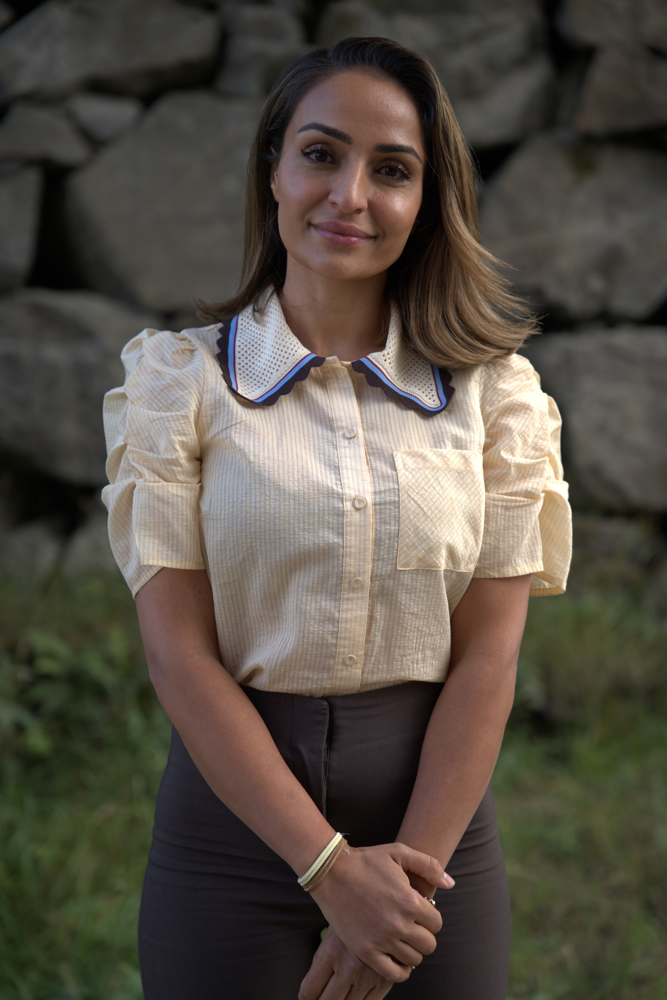

Samtalestøtte for deg som sørger
Du trenger ikke legge kjærligheten bak deg for å kunne gå videre.
Sorg er ikke et problem som skal løses. Det er en forandret virkelighet som må få en plass i livet.

Her kan du begynne
Hva står du i?
Når et viktig menneske dør, mister vi ofte mer enn personen. Vi mister også noe av hverdagen, tryggheten og framtiden vi hadde sammen. Ingen sorg er lik. Men ingen skal måtte finne veien gjennom den alene.
Forstå sorgen
Det du kjenner kan være en del av sorgen.
Er dette normalt?
Om svingninger, uro, søvn og det å ikke kjenne seg selv igjen.
02 · FølelserNår savnet tar over
Om lengsel, minner og øyeblikk der fraværet blir overveldende.
03 · KroppenNår kroppen sørger
Om søvn, utmattelse, uro, appetitt og spenninger.
Når du trenger mer enn å lese
Samtaler med plass til hele deg.
Noen ganger hjelper kunnskap. Andre ganger trenger vi et annet menneske som tåler å være sammen med oss i det som gjør vondt. Du får rom til å fortelle, være stille, stille spørsmål og sortere tanker.
Slik foregår samtalene →Du trenger ikke vite nøyaktig hva du skal si. Vi kan begynne der du er.
Om meg
Faglig kunnskap. Menneskelig forståelse.
Jeg har mastergrad i klinisk psykologi og 11 års erfaring fra psykisk helsevern, blant annet fra akuttpsykiatri og psykisk helsevern for barn og unge. Jeg har også erfaring med sorggrupper og støtte etter alvorlige tap.
Jeg kjenner også sorg fra mitt eget liv. Det har gitt meg en dyp respekt for hvor forskjellig mennesker sørger.
Les mer om meg →Lav terskel når behovet er størst
Du trenger ikke vente til det blir for tungt.
Ingen henvisning. Kort ventetid. Første samtale gratis.
Book en gratis førstesamtale